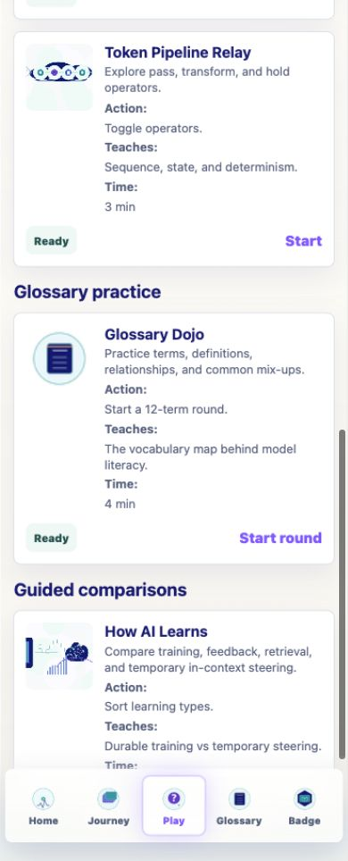
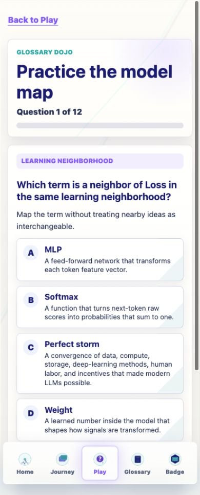
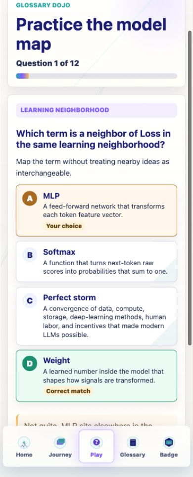
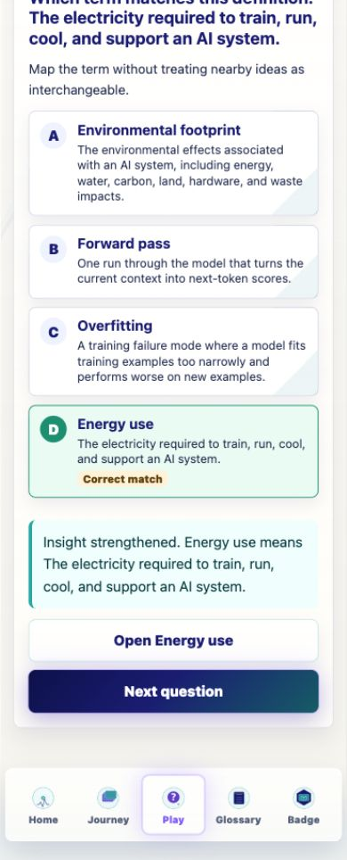
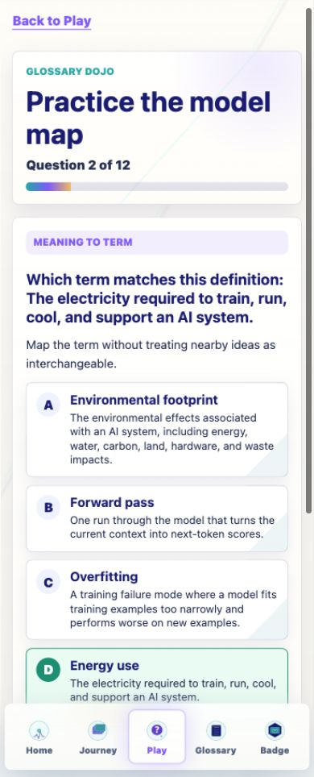
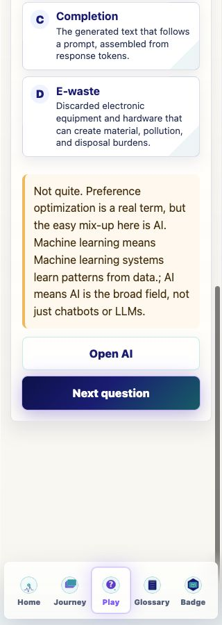
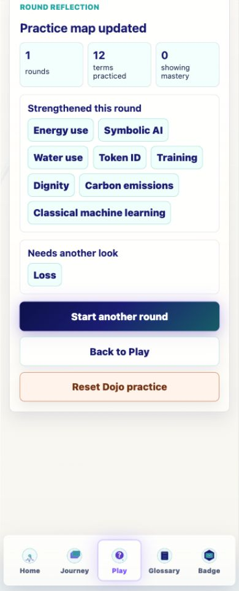
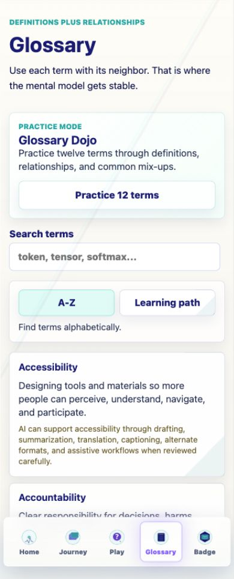
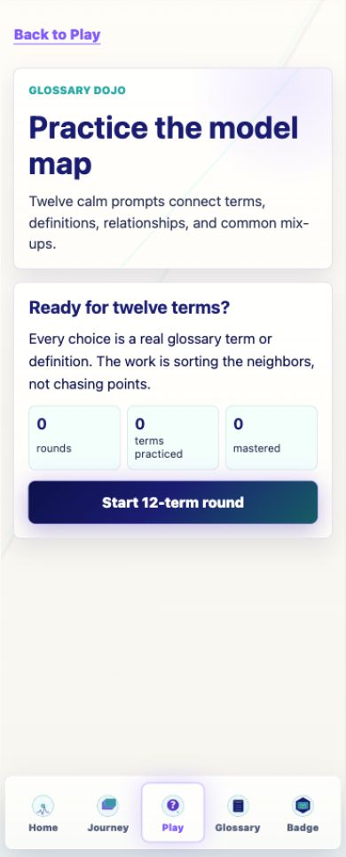

Prompt Life v0.18.7
Glossary Dojo V1 Report
A focused mobile-first Play activity for practicing model-literacy vocabulary without scores, timers, streaks, leaderboards, or failure states.
Date: June 6, 2026
What Changed
- Added Glossary Dojo as a Play subview with 12-question rounds and four answer choices per question.
- Used `src/data/content.ts` glossary data as the source of truth, with a small optional metadata overlay.
- Tracked Dojo practice in `promptlife.glossaryDojo.v1`, including current-round resume, recent mistakes, and per-term mastery.
- Added entry points from Play and Glossary while keeping Journey progress, checkpoint randomization rules, badge criteria, dependencies, generated images, and the one-badge model unchanged.
- Included the Dojo key in the app-wide Start over/debug clear path so reset clears Dojo practice too.
Implementation Details
Source Files Used
`src/data/content.ts`, `src/utils/choiceOrder.ts`, `src/main.tsx`, and `src/styles/global.css`.
New Files Added
`src/data/glossaryDojoMeta.ts` and `src/features/glossary-dojo/*` for types, engine, storage, hook, game, and summary UI.
Mastery Rule
Mastered after a correct answer in two distinct rounds, or after a previously missed term is answered correctly in a later round.
Question Types
`term_to_definition`, `definition_to_term`, `confusable_pair`, `relationship`, and `stage_location`.
Route Integration
Play card under Glossary practice; Glossary button labeled Practice 12 terms. The Dojo is not added to the badge `games` array.
Accessibility
Native buttons, visible focus, status feedback, no positive tabindex, and text labels for correct/incorrect state.
Verification
- `npm run typecheck`: passed.
- `npm run build`: passed with the existing Vite large-chunk warning.
- `npm run build:pages`: passed with the existing Vite large-chunk warning.
- `npm run audit:answers`: passed.
- `git diff --check`: passed.
- Browser QA passed for Play entry, Glossary entry, incorrect/correct feedback, hard-reload resume, round summary, reset/restart, and 320px/390px/430px overflow checks.
- Blocked-storage fallback is implemented in `storage.ts`; browser simulation was not practical in this environment.
Known Issues
- The first metadata overlay is intentionally partial; richer relationship and confusable-pair questions improve as metadata grows.
- The in-app browser automation focused the Start button but did not fire native button activation with its keypress command. Native button semantics and visible focus are implemented; a human keyboard spot check is recommended before v1.
- Blocked-storage fallback should get a dedicated browser test if a test runner is added later.
- The existing Vite bundle-size warning remains; this pass did not add dependencies or heavy assets.
Screenshots








